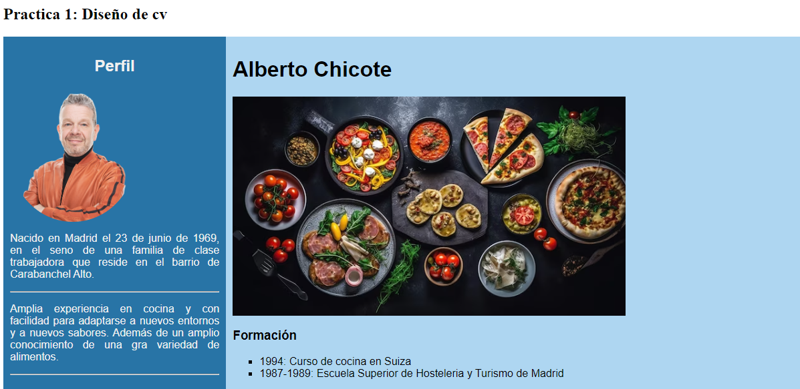

Práctica 1
CV Chicote
En esta primera práctica hemos hecho el curriculum vitae de Alberto Chicote, un personaje muy importante de nuestra cultura y he incluido algunas de sus frases más celebres para que se puedan escuchar, además de la posibiliddad de contactar con su restaurante.
Ver la práctica